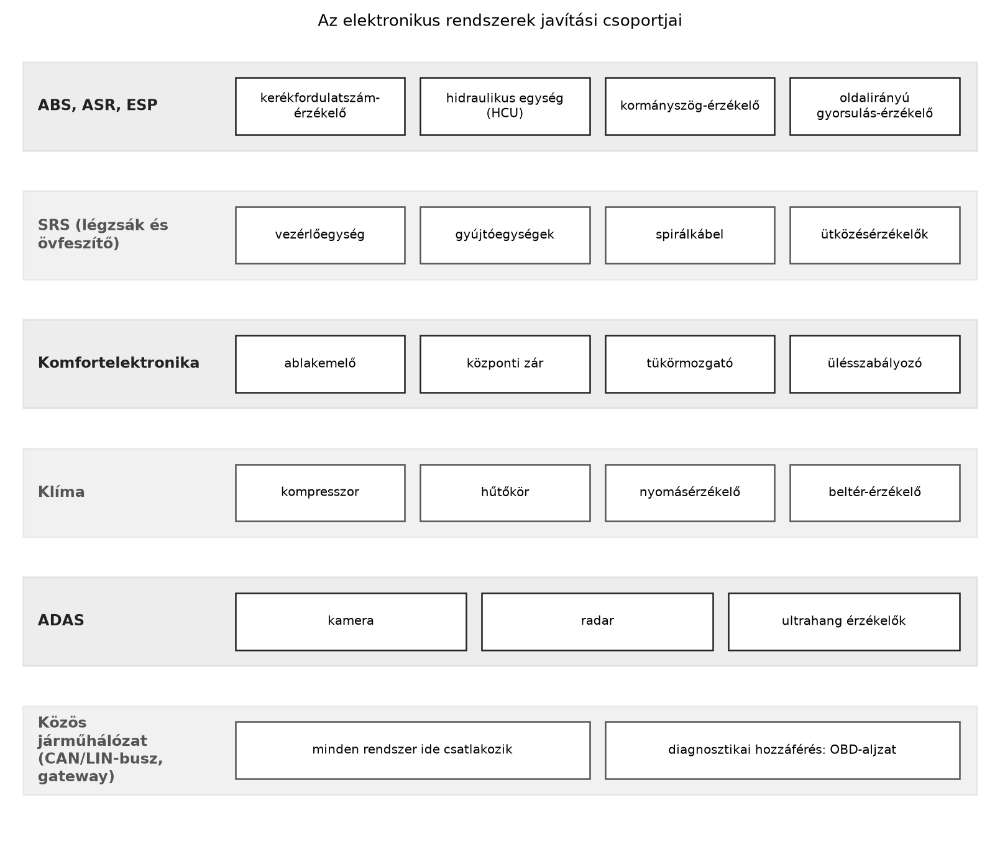
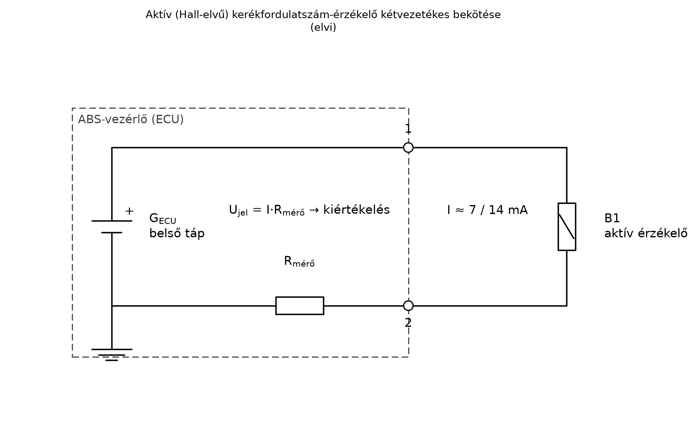

Egy hétköznapi műhelyi helyzetből indulunk: a szervizbe behoznak egy középkategóriás autót, az ügyfél panasza szerint „a műszerfalon egyszerre jött be az ABS-lámpa és a csúszásgátló ikon, majd később a légzsák-lámpa is kigyulladt, és azóta világít”. A klíma sem hűt rendesen, a jobb hátsó ablakemelő pedig csak néha működik. A szerelőnek egyszerre kell rendszerszemlélettel átlátnia a hibát, és biztonságosan, a gyártói javítási utasítás szerint dolgoznia. Ez az alfejezet pontosan erre tanít: az ABS, ASR és ESP rendszer javítására, a pirotechnikai biztonságot igénylő légzsák- és övfeszítő-szerelésre, a komfortelektronika tanítására és ellenőrzésére, a klímaszervizre, valamint a vezetőtámogató rendszerek (ADAS) kalibrálását tartalmazó munkafolyamatokra.
Képzeljük el, hogy a jármű akkumulátorát a gyártói előírás szerint
lecsatlakoztattuk, a műhelyben elszívó működik, a jármű kerekét
kitámasztottuk. A diagnosztikai műszer a következő hibakódokat olvassa:
C0035 (tanulási példa: a kód jelentése gyártóspecifikus,
ellenőrizendő; itt: kerékfordulatszám-érzékelő szakadás),
B0013 (tanulási példa: vezetőoldali légzsák gyújtókör túl
nagy ellenállás; gyártóspecifikus, ellenőrizendő) és B1082
(tanulási példa: jobb hátsó ablakemelő-rendszer hibás; gyártóspecifikus,
ellenőrizendő). A szerelő kezében multiméter, oszcilloszkóp és a gyártói
áramútrajz van. A rendszerek szintjeit így foglalhatjuk össze:

Az ábra rétegei egymás mellé rendelt rendszercsoportok (a sorrendjük nem javítási sorrend), a legalsó sáv a közös járműhálózat: az egyes rendszerek fizikailag és diagnosztikailag elkülönülnek, de a buszkommunikáción keresztül sokszor összefüggenek. Például a kerékfordulatszám-érzékelő jele nemcsak az ABS-nek, hanem a hegyimentő rásegítésnek (ESP) és a gumiabroncsnyomás-figyelőnek is kell.
Definíció. ABS (Antilock Braking System) – blokkolásgátló rendszer. A kerékfordulatszám-érzékelők jeleiből érzékeli, ha egy kerék a fékezés során blokkolna, és a hidraulikus egység (HCU) segítségével rövid, periodikus nyomáscsökkentést, tartást vagy felépítést végez az adott kerékfékhengerben, így a kerék a tapadási határ közelében marad.
Definíció. ASR (Acceleration Slip Regulation) – kipörgésgátló. Hasonló elv alapján, gyorsítás közben érzékeli a hajtott kerék kipörgését; a motor nyomatékcsökkentésével (gyújtás, befecskendezés pillanata, elektronikus fojtószelep) és/vagy fékezeti beavatkozással visszafogja a hajtási szlipet.
Definíció. ESP (Electronic Stability Programme) – menetstabilizáló rendszer. A kormányszög, a kerékfordulatszám, az oldalirányú gyorsulás és a legyezési sebesség jeleiből felismeri a jármű alul- vagy túlkormányzott viselkedését, és egy vagy több kerék célzott fékezésével, valamint esetleg motornyomaték-csökkentéssel korrigálja a menetstabilitást.
Definíció. SRS (Supplemental Restraint System) – kiegészítő védelmi rendszer, a légzsákok és övfeszítők gyűjtőneve. A pirotechnikai gyújtóegységek robbanékony szerkezetek, ezért a javításukra speciális biztonsági előírások vonatkoznak.
Definíció. ADAS (Advanced Driver Assistance Systems) – fejlett vezetőtámogató rendszerek. Ide tartoznak a kamera, radar, ultrahang vagy lidar alapú rendszerek: sávtartó, vészfékasszisztens, adaptív távolságtartó, holttérfigyelő stb. Az érzékelő pontos geometriája kritikus a működéshez, ezért javítás után kalibrálni kell.
Összefüggés. A kerékfordulatszám-érzékelő jele lehet passzív induktív típusú: a fogazott jeladógyűrű forgása váltakozó feszültséget kelt, a jel frekvenciája arányos a kerék fordulatszámával, az amplitúdója is nő a kerékfordulatszámmal. A Hall-elvű aktív érzékelőnél a vezérlőegység tápfeszültséget ad (gyakran 7–14 V), az érzékelő pedig négyszögjelet vagy digitális állapotjelet ad, amelynek kapcsolási frekvenciája ugyancsak a kerékfordulatszámmal arányos.
Az ábra felső része az induktív érzékelő szinuszos feszültségét mutatja: 20 km/h-nál kb. 127 Hz és kis csúcsérték, 60 km/h-nál kb. 381 Hz és nagyobb csúcsérték. Az alsó rész az aktív érzékelő áramjelét: a két szint (kb. 7 és 14 mA, ellenőrizendő) a sebességtől független, csak a váltások üteme sűrűsödik. Az interaktív változatban a sebesség, a fogszám és a gördülési sugár állítható, a frekvencia () kiszámítva jelenik meg; a „légrés túl nagy” kapcsoló az induktív jel csökkenését mutatja.
A blokkolásgátló rendszer fő részei:
Az ABS működése: amikor erőteljes fékezésnél egy kerék lassulása eltér a számított járműlassulástól, a vezérlőegység az adott kerék mágnesszelepét átkapcsolja, hogy a nyomást tartsa vagy csökkentse. A beavatkozás során a fékpedál pulzálását, zaját a járműben érezni lehet.
A javítás során:
A légzsákrendszer központi vezérlője érzékeli az ütközést, és pirotechnikai gyújtóegységeket indít. A vezérlőegység a gyújtókört folyamatosan ellenőrzi, ezért ha a spirálkábelt, az érzékelőt vagy a modult szabálytalanul csatlakoztatják, hibakódot tárol.
Előírás. A légzsák- és övfeszítő-rendszeren bármilyen munkálat előtt a gyújtást ki kell kapcsolni, a 12 V-os akkumulátor negatív pólusát le kell kötni, és a gyártó által előírt várakozási időt (jellemzően 3–15 perc, ellenőrizendő a gyártói javítási utasításban) kell eltölteni, hogy a tartalék kondenzátorok kisüljenek. Csak ezután szabad a pirotechnikai egységeket bontani.
Tilos. A gyújtóegységet közvetlenül ellenállásmérővel vagy bármilyen áramforrással vizsgálni, mert az indítóáram hatására a gyújtóegység beindulhat, súlyos sérülést okozva.
Spirálkábel: kormányműszer középső helyzetéből szerelendő, a középhelyzet jelölését a gyártó adja. A csatlakozók biztonsági retesszel rendelkeznek, a csatlakozót csak a retesz feloldása után szabad bontani.
A komfortfunkciók (ablakemelő, központi zár, tükörmozgató, ülésállítás, napfénytető) elektronikus vezérlőegységei többnyire CAN- vagy LIN-buszon kommunikálnak. Javítás után a rendszereket gyakran újra kell „tanítani”:
A hibakeresésnél mindig a tünetből indulunk ki, és a gyártói áramútrajz alapján a kapcsolót, a motor áramkörét, a csatlakozókat és a biztosítékokat ellenőrizzük.
A klímaberendezés javítása során a hűtőkör nyomás alatt áll. Az F-gáz szabályozás szerint a hűtőközeggel végzett munkákhoz (lefejtés, visszafejtés, töltés, szivárgásvizsgálat) képesítés szükséges. A hűtőközeget a légkörbe engedni tilos.
A klímaszerviz jellemző lépései:
A hibás kompresszort, eltömődött expanziós szelepet vagy szivárgó kondenzátort a gyártó szerint kell cserélni; a rendszert csak szűrővel együtt szabad javítani.
A vezetőtámogató rendszerek érzékelői (kamera, radar, ultrahang) a járműhöz képesti pontos geometriát igényelnek. Szélvédőcsere, érzékelőcsere, futómű beállítás után a rendszer diagnosztikája általában hibakódot jelezhet, vagy a szerviznek kötelező kalibrálást végeznie. A kalibrálás lehet:
Előírás. ADAS-kalibrálást csak a gyártói céltáblákkal, a jármű terhelési állapotát, az üzemanyagszintet és a futómű beállítását pontosan betartva szabad végezni. A hibás kalibrálás téves vészfékbecsléshez vagy nem megfelelő sávtartáshoz vezethet, ami közúti balesetveszélyt okoz.
Adott egy jármű, amelyen az ABS-lámpa világít. A diagnosztikai műszer a jobb első kerékfordulatszám-érzékelő hibáját jelzi. A gyártói adat szerint az érzékelő tekercsellenállása 800–1600 Ω, a légrés 0,3–1,0 mm (tanulási példa, ellenőrizendő: gyártói adat).
Számítás. A szerelő multiméterrel mér: az érzékelő ellenállása , ami a tűréshatáron belül van. A légrést hézagmérővel ellenőrzi: . Ez is megfelel. A jeladógyűrű fogai épek, nincs fémforgács. A hiba tehát valószínűleg mégsem az érzékelő, hanem a csatlakozó szakadása az érzékelő és az ABS-vezérlő között.
A szerelő a gyártói áramútrajz alapján átnézi a kábelköteget, és az érzékelő csatlakozójánál a csatlakozó hüvely korrodált. A csatlakozót kontaktjavítóval tisztítja, a szilikon-tömítőgyűrűt ellenőrzi, majd új csatlakozó hüvelyt présel fel. A hibakód törlése után rövid próbaút: az ABS-lámpa elalszik, a rendszerteszter nem mutat hibát.
Egy másik járművön a bal hátsó kerékfordulatszám-érzékelő jele hiányzik. Az érzékelő aktív (Hall- vagy magnetorezisztív) típusú, két vezetéken kapja a tápot az ABS-vezérlőtől, és a jelét áramváltozásként adja (kb. 7 mA / 14 mA – ellenőrizendő: gyártói adat). A mérés:
A jel frekvenciája
Az oszcilloszkóp frekvenciája ennek megfelelő értéket mutat, tehát a jeladó egészséges. A hiba a vezeték szigetelésének sérülése lehet, amelyet át kell vizsgálni.
Ellenőrzőlista elektronikus rendszer javítása után:
Egy ügyfél panasza: „a menetstabilizáló szimbólum néha felvillan, az ABS-lámpa pedig hosszabb lejtmenetben jön be.” A rendszerteszter kiolvassa a bal hátsó kerékfordulatszám-érzékelő hibáját. A szerelő a járművet emelőre állítja (bakra támasztva), leválasztja a csatlakozót, és megméri az érzékelő ellenállását: , a gyártói érték szerint 800–1600 Ω, tehát ez rendben van. A légrés , ami a tűrés felső határán van. A jeladógyűrű tisztának tűnik. A hibakód törlése után rövid próbaút során a hiba visszatér, de csak akkor, amikor a kerék oldalirányban terhelést kap. A szerelő rájön, hogy a csapágy lötyög; a kerékfordulatszám-érzékelőnek a kerékagyhoz viszonyított holtjátéka eltér, a légrés megnyúlik. A kerékcsapágy cseréje és az érzékelő újra rögzítése után a hiba megszűnik. A tanulság: az érzékelő hibakódja nem mindig magát az érzékelőt jelenti; ellenőrizni kell a jeladógyűrűt, a légrést, a csapágy játékát és a kábelköteget is.
Biztonsági korlát. A feladat tanműhelyi környezetre, oktató felügyeletére és a gyártói javítási utasítás betartására vonatkozik; a megadott értékek tanulási példák.
Cél: a jobb első kerékfordulatszám-érzékelő cseréje és jelének ellenőrzése.
Szerszámok és anyagok: kerékemelő, bak, kéziszerszámok, nyomatékkulcs, hézagmérő, multiméter, oszcilloszkóp (vagy diagnosztikai műszer), új érzékelő, a gyártó által előírt rögzítőcsavar/rögzítőpatent és szerelőpaszta (ellenőrizendő: gyártói adat), kontaktjavító spray.
Munkalépések:
Biztonsági korlát. Pirotechnikai egységen csak feszültségmentesített állapotban, a gyártói előírás szerint, és csak olyan személy dolgozhat, aki erre ki van képezve. A feszültség alatt lévő légzsákrendszeren tilos munkát végezni.
Munkalépések:
A válaszok a Megoldások elején találhatók.
1. feladat (A). Sorolja fel az ABS-rendszer fő részeit és azok szerepét.
2. feladat (A). Milyen mérésekkel ellenőrizhető egy kerékfordulatszám-érzékelő?
3. feladat (B). Egy jármű kerék gördülési sugara , a jeladógyűrű 50 fogú. Számítsa ki a jel frekvenciáját 80 km/h sebességnél.
4. feladat (B). Rajzolja le az aktív érzékelő kétvezetékes bekötését az ABS-vezérlőhöz.
5. feladat (C). Egy ABS-javítás után a hibakód törlése ellenére a rendszerteszter folyamatosan „kalibrálás hiányzik” hibát jelez. Mi lehet az ok, és hogyan járjon el?
6. feladat (D). Ügyfél panasza: a légzsák-lámpa világít. A diagnosztikai műszer azt jelzi, hogy a vezetőoldali gyújtókör ellenállása nagy. Ismertesse a hibakeresési láncot és a biztonsági lépéseket a légzsákmodul cseréjéig.
Önellenőrzés – válaszok:
1. feladat (A). Fő részek: kerékfordulatszám-érzékelők (keréksebesség jele), hidraulikus egység (nyomásmódosítás), elektronikus vezérlőegység (jelek feldolgozása, vezérlés), kormányszög-érzékelő, oldalirányú gyorsulás- és legyezési érzékelő, féklámpa-kapcsoló.
2. feladat (A). Induktív érzékelőnél: tekercsellenállás, légrés, jeladógyűrű állapota, oszcilloszkóppal a váltakozó feszültség frekvenciája és amplitúdója. Aktív (Hall-) érzékelőnél: a vezérlőtől kapott táp megléte, az áramjel két szintje (kb. 7/14 mA, ellenőrizendő) és frekvenciája a vezérlő oldali mérőponton.
3. feladat (B). Szoftver használható, de kézzel is: . Kerék kerülete: . Kerékfordulatszám: . Jel frekvencia: .
4. feladat (B). A rajz lényege: az aktív érzékelő két vezetéken csatlakozik az ABS-vezérlőhöz, a tápot a vezérlő adja, a jel áramjel. A bekötést egyszerűen ábrázoljuk:

A rajzon az aktív érzékelő két vezetékkel csatlakozik az ABS-vezérlőhöz: a felső vezetéken (1) kapja a vezérlő belső tápját, az alsón (2) az áram a vezérlőben lévő mérőellenálláson át folyik a testre. Az érzékelő az áramát a fogak ütemében két szint (kb. 7 és 14 mA, ellenőrizendő) között kapcsolja, a vezérlő a mérőellenálláson eső feszültségből számolja a frekvenciát.
5. feladat (C). A kalibrálás hiánya általában a kormányszög-érzékelő újratanítását jelenti. A következőt tegye: végezze el a gyártói kalibrációs rutint diagnosztikai műszerrel; ellenőrizze a kormányszög-érzékelő alapjeleit; a kalibrálás után törölje a hibakódot, majd végezzen próbaút. Ha a hibakód visszatér, ellenőrizze a kormányszög-érzékelő bekötését és a jármű futómű-beállítását.
6. feladat (D). Hibakeresés:
A fejezetben áttekintettük az ABS, ASR és ESP rendszer felépítését, a kerékfordulatszám-érzékelők vizsgálatát és cseréjét, a légzsák- és övfeszítőrendszer biztonságos szerelését, a komfortelektronika tanításait, a klímaszerviz alapjait és az ADAS-érzékelők kalibrálását. Kiemeltük, hogy a gyártói javítási utasítás mindig elsőbbséget élvez; a munkákhoz gyakran diagnosztikai műszer, speciális célszerszám és pontos várakozási/nyomatékadatok szükségesek. A légzsák egység pirotechnikai szerkezet, ezért feszültségmentesítés, várakozási idő és szakszerű tárolás nélkül tilos szerelni. Az ABS hiba keresésekor az érzékelőn kívül a jeladógyűrűt, a légrést, a csapágyat és a csatlakozókat is ellenőrizni kell. Továbbvitt eredmény: ez a rendszerezett javítási módszertan a vizsgafelkészülés gyakorlati hibakeresési és szerelési feladataiban válik majd alkalmazhatóvá; a lépések tudatos követése csökkenti a hibás javítás és a baleset kockázatát.
Forrástípusok: gyártói javítási kézikönyvek és kódolási utasítások; ENSZ-EGB előírások (pl. ECE R13-H a fékrendszerre, ECE R94/R95 a légzsákra; pontos számok ellenőrizendők); EU általános biztonsági rendelet (GSR, az ADAS-rendszerekre; pontos hatály ellenőrizendő); F-gáz szabályozás (uniós és hazai, pontos rendeleti számok ellenőrizendők). Ellenőrizendő továbbá: kerékfordulatszám-érzékelő jellemző ellenállás- és légrés-értéktartományai, légzsák várakozási idő, csavarok meghúzási nyomatéka, klíma nyomásértékek és töltetmennyiségek, ADAS kalibrációs távolságok és céltábla-elrendezések. A szövegben szereplő minden konkrét szám példa.